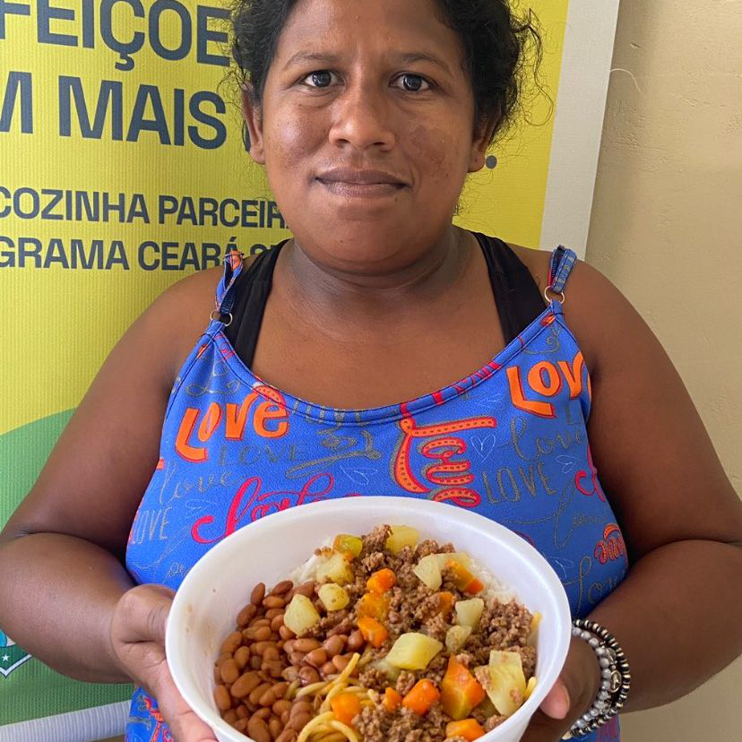
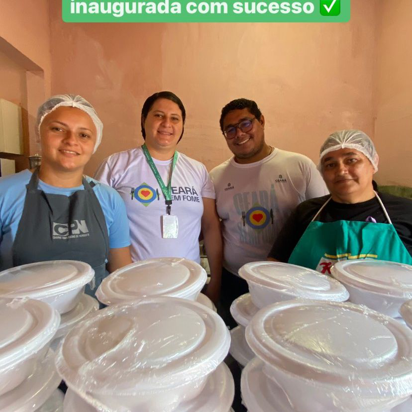
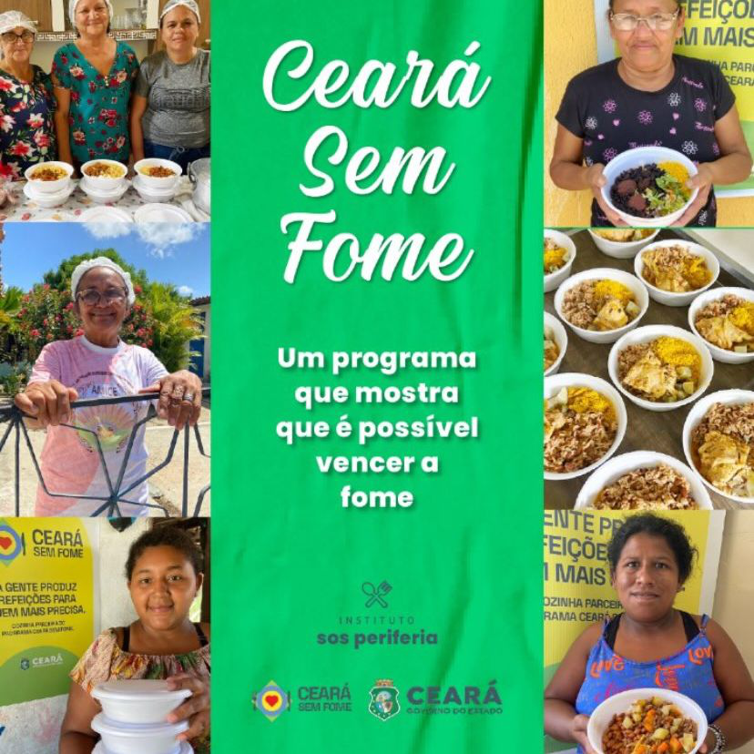
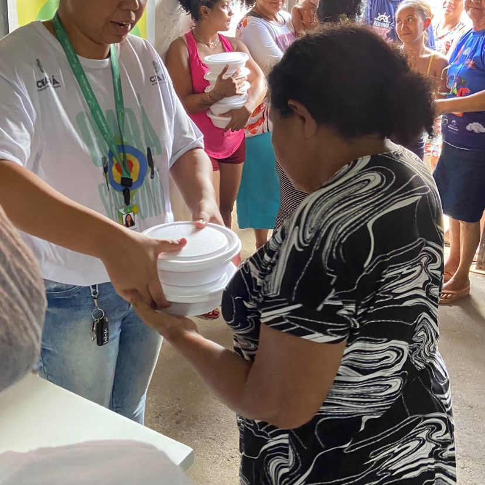
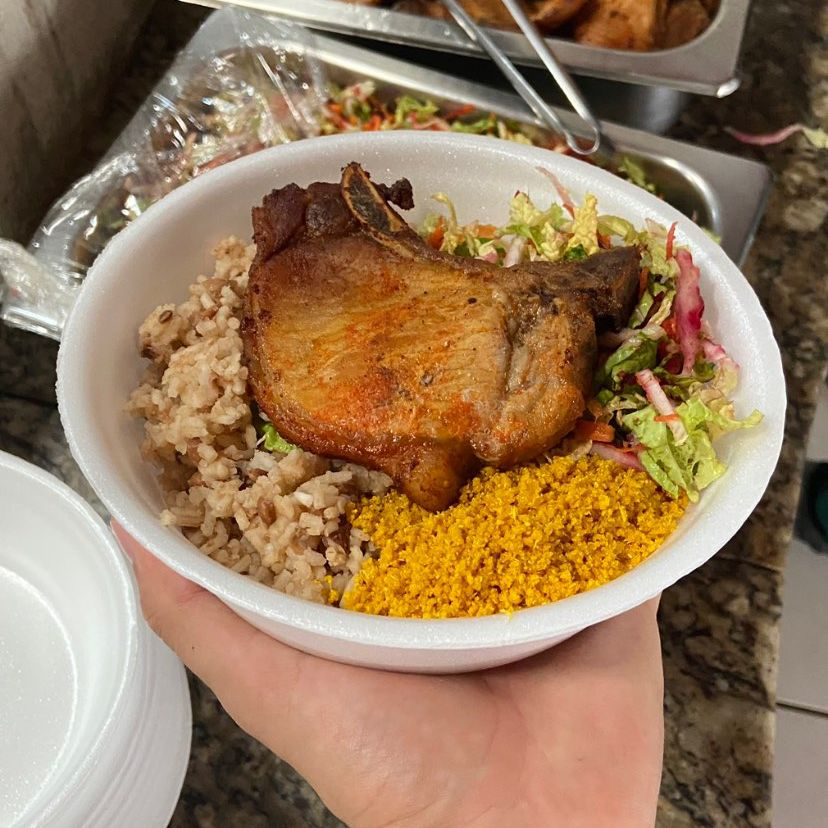
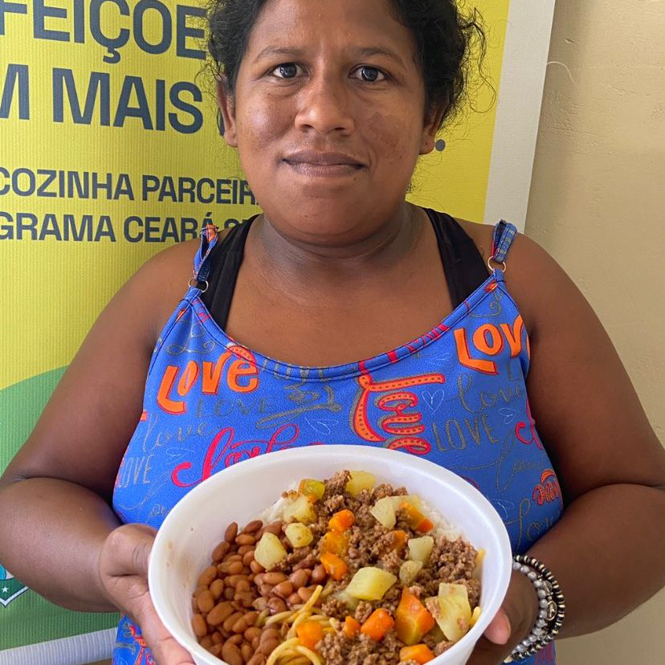
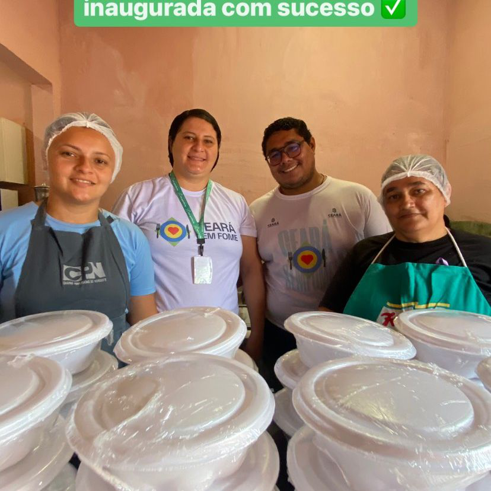
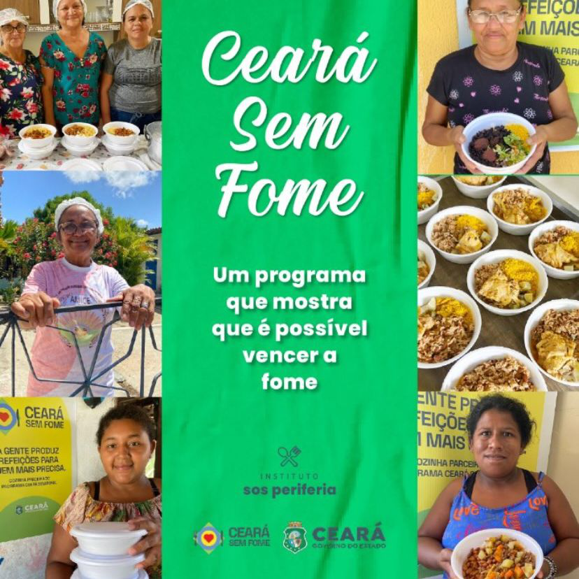
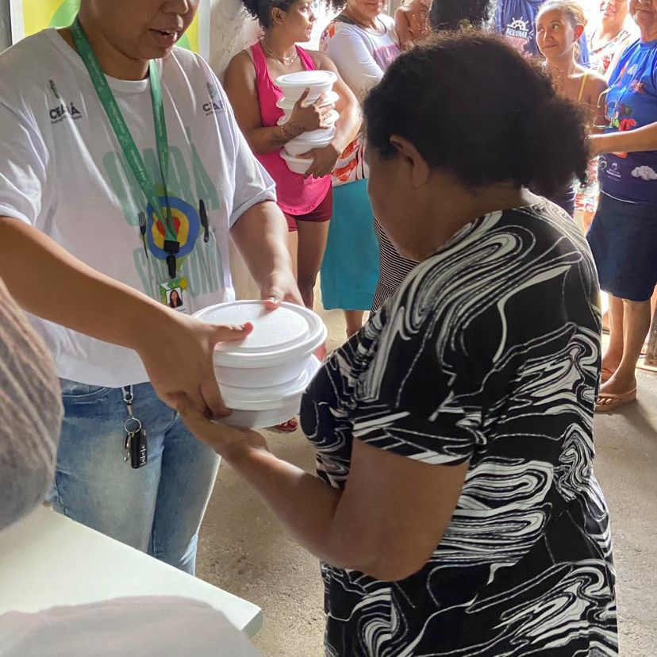
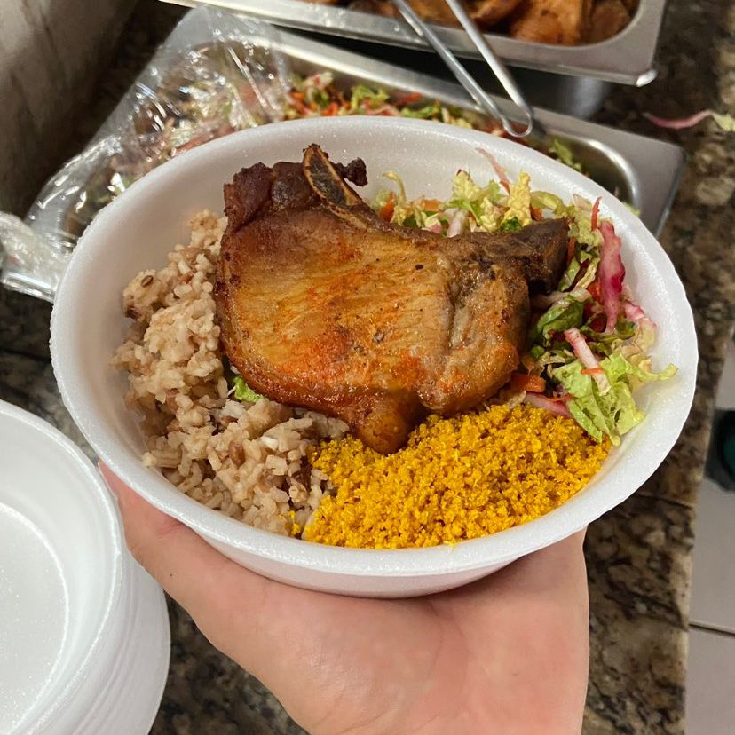

Doações de Alimentos
📞 Whatsapp: (85) 98965-1386
✉️ E-mail: contato.sos.periferia@gmail.com
📸 Instagram: @sos.periferia
Distribuição de Alimentos
Coordenamos esforços para distribuir refeições e cestas básicas para comunidades vulneráveis. Nossa equipe garante que os alimentos cheguem com qualidade e segurança a quem mais precisa.
 









Somos uma Unidade Gerenciadora do Programa Ceará Sem Fome. Com muita dedicação e amor gerenciamos 62 cozinhas da região metropolitana de Fortaleza: Maracanaú, Maranguape, Itaitinga, Pacatuba e Guaiúba. Que juntas produzem aproximadamente 102.000 mil refeições por mês para 5.100 pessoas.
Para mais informações sobre como ser um doador ou entrar em contato sobre as cozinhas voluntárias mais próximas de você, visite este link.
Educação Nutricional
Fornecemos recursos educacionais sobre nutrição e segurança alimentar. Promovemos workshops e palestras para conscientizar sobre a importância de uma alimentação saudável e balanceada.
Dicas de Alimentação Saudável:
- 📌 Inclua uma variedade de frutas e vegetais na sua dieta diária.
- 🍚 Opte por grãos integrais em vez de refinados.
- 🐟 Consuma proteínas magras, como peixe, frango e leguminosas.
- 💧 Beba muita água ao longo do dia.
- 🍱 Evite alimentos processados e ricos em açúcares e gorduras saturadas.
Fale com um Nutricionista
Calendário de Palestras e Workshops
Receitas Saudáveis
Salada de Grão de Bico
⏰ 20 minutos
Uma receita simples e nutritiva.
Ingredientes:
- 1 xícara de grão de bico cozido
- 1 tomate picado
- 1 pepino picado
- 1/2 cebola roxa picada
- 1/4 xícara de salsinha picada
- Suco de 1 limão
- 2 colheres de sopa de azeite de oliva
- Sal e pimenta a gosto
Modo de Preparo:
Misture todos os ingredientes em uma tigela grande. Tempere com o suco de limão, azeite, sal e pimenta. Sirva em seguida.

Sopa de Legumes Econômica
⏰ 45 minutos
Uma receita fácil, nutritiva e acessível.
Ingredientes:
- 2 batatas médias
- 2 cenouras
- 1 cebola
- 2 dentes de alho
- 1 chuchu
- 1 abobrinha pequena
- 1 tomate
- 1 litro de água
- Sal e pimenta a gosto
- 1 fio de óleo
Modo de Preparo:
1. Descasque e corte os legumes em pedaços pequenos.
2. Em uma panela grande, aqueça o óleo e refogue a cebola e o alho até dourarem.
3. Adicione os legumes e refogue por alguns minutos.
4. Adicione a água, sal e pimenta. Deixe cozinhar até que os legumes estejam macios.
5. Use um mixer para triturar os legumes até obter um creme homogêneo, se desejar.
6. Sirva quente.
Instituto S.O.S Periferia
Em parceria com o Instituto S.O.S Periferia, coordenamos a distribuição de alimentos e promovemos a conscientização sobre segurança alimentar. Juntos, trabalhamos para reduzir a fome e melhorar a nutrição nas comunidades periféricas.